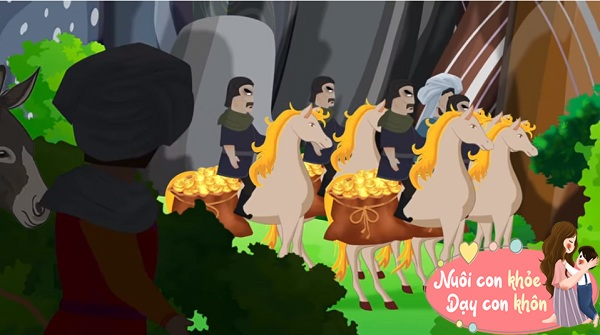
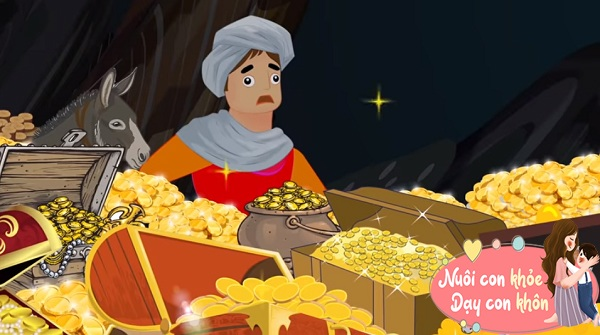
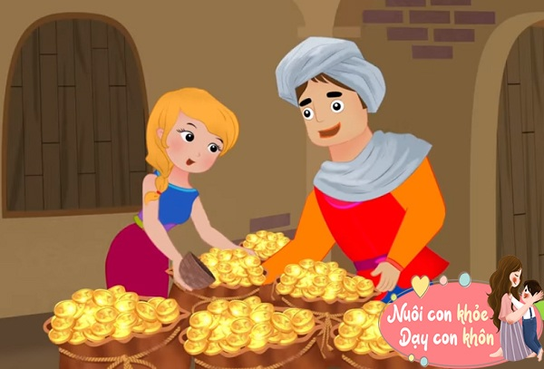
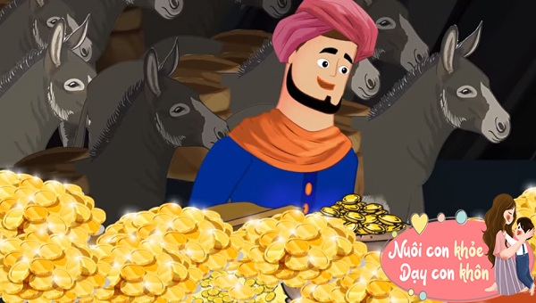

Thuở xưa tại vương quốc Iraq có hai anh em là Casim và AliBaba. Casim, người anh chiếm đoạt hết tài sản do cha mẹ để lại đồng thời lại lấy được vợ giàu sang nên có một đời sống dư giả rất sung túc.
Trái lại AliBaba vì không muốn tranh đoạt gia tài với anh ruột lại lấy phải vợ nghèo nên đời sống khá chật vật, chỉ đủ qua ngày. Hàng ngày Ali Baba phải đi lên rừng đốn củi đem về bán để kiếm sống.
Thấy em nghèo túng, Casim và vợ không những không thương xót giúp đỡ mà còn tỏ vẻ lạnh lùng, khinh khi ra mặt. Nhưng Ali Baba vẫn không vì thế mà phiền lòng hay bất mãn, vẫn thường qua lại thăm hỏi anh mình và chị dâu cho phải đạo làm em.
Hôm ấy như thường lệ, Ali Baba lên rừng đi lấy củi. Xong việc, chàng chất củi vào hai túi hai bên hông con lừa. Đang định lên đường về lại nhà bỗng nhìn thấy cát bụi mịt mù từ đàng xa, rồi kế đến là tiếng vó ngựa dồn dập mỗi lúc một gần. Ali Baba hoảng hốt, dắt lừa vào núp trong một bụi rậm, nhưng vẫn để ý nghe ngóng.
Rồi tiếng vó ngựa bỗng im bặt… Một đoàn kỵ sĩ trông dữ dằn, mang đao kiếm đầy mình dừng lại bên cạnh một tảng đá lớn trông chẳng khác gì một quả núi. Chung quanh tảng đá, rêu cỏ, cây cối mọc rậm rạp bao phủ kín mít. Nếu ai từ xa ngắm lại ắt chỉ nhìn thấy một khối xanh rì.
Ali Baba đếm được trước sau 40 người và 40 ngựa. Người nào cũng tháo gỡ một chiếc túi lớn từ trên lưng hay từ hai bên hông ngựa xuống; có người thì hai túi, kẻ ba túi… Đoàn người cùng nhau tiến tới sát bên tảng đá. Người đi đầu, có lẽ là thủ lãnh của đám người bỗng ra dấu cho tất cả dừng lại trước rồi giơ hai tay lên trời nói lớn:
- Vừng ơi mở cửa ra!
Lạ lùng thay, tảng đá lâu nay mà Ali Baba đi ngang qua không biết bao nhiêu lần mà không bao giờ để ý như có một cánh cửa tự động mở ra, và bên trong sâu hun hút tựa như là một hang động. Đoàn người ôm hành trang cùng vào tất cả bên trong. Người thủ lãnh là người đi sau cùng. Y lại giơ hai tay lên trời nói:
- Vừng ơi, hãy đóng lại!
Lập tức cánh cửa đóng lại. Và bây giờ trông tảng đá khổng lồ lại giống như một hòn núi khi nãy, không có gì đáng chú ý cả. Ali Baba vẫn núp kín, không dám chường mặt ra, sợ đoàn người kia phát hiện thì có thể nguy đến tánh mạng của chàng không chừng. Phải đợi đến cả giờ đồng hồ sau, chàng mới nghe được tiếng:
- Vừng ơi mở cửa ra!
Rồi đoàn người 40 mạng từ từ lần lượt bước ra ngoài. Người thủ lãnh lại giơ hai tay lên trời nói:
- Vừng ơi, hãy đóng lại!
Đoàn người sau đó lên ngựa. Cát bụi lại bay mù mịt khắp trời pha lẫn với tiếng vó câu rang rền. Chỉ trong nháy mắt, đoàn kỵ sĩ đã mất hút, trả lại sự im lặng cho chốn núi rừng. Đoàn người đi rồi, Ali Baba mới dám ra khỏi chỗ núp. Do tính tò mò thúc đẩy, thay vì lên đường về nhà chàng đến trước tảng đá đưa hai tay lên nói:
- Vừng ơi mở cửa ra!
Lập tức cánh cửa được mở ra. Chàng nhìn thấy rõ bên trong là một hang động đúng như chàng đoán. Đã đến nước này, Ali Baba quyết định phải vào thăm xét một chuyến. Nghĩ đoạn, chàng liền dắt luôn con lừa vào trong rồi đưa hai tay lên nói:
- Vừng ơi, hãy đóng lại!
Và cửa động đã được đóng kín sau đó. Nhìn thấy ánh sáng từ đâu trong động lóe ra, Ali Baba bèn nhắm hướng đó mà đi. Vừa đến nơi, chàng kêu lên một tiếng vì kinh ngạc. Trước mặt chàng, một kho tàng khổng lồ không ai có thể tưởng tượng nổi, cho dù là ở trong truyện cổ tích.
Ôi chao! Nào là kim cương, vàng bạc châu báu, lại thêm không biết bao nhiêu là nhung lụa, những tấm thảm thật đẹp lộng lẫy ngay cả trong cung điện vua chúa cũng không thể nào có được. Ôi thì trăm ngàn thứ, vật nào cũng quý giá cả! Chàng thầm nghĩ.
- “Vậy thì 40 người đó chắc hẳn là cướp rồi. Thì ra chúng đi cướp khắp nơi, dùng địa điểm này là nơi dự trữ, cất giấu các bảo vật cướp được chứ chẳng chạy vào đâu! Ta phải mau ra khỏi nơi đây kẻo chúng trở lại ắt nguy đến tánh mạng!”.
Nhưng dù sao Ali Baba vẫn chỉ là con người. Hỏi có mấy ai khi đứng trước một kho tàng vĩ đại như thế này mà không động lòng bao giờ! Chàng đánh liều, gom góp một số vàng bạc châu báu thật nhiều nhét vào đầy các túi dùng để củi hai bên hông lừa rồi lấy củi ngụy trang ở phía trên. Xong xuôi, chàng liền dùng câu thần chú nghe được để mở cửa động rồi đóng lại cẩn thận như không có gì xảy ra.
Về đến nhà, Ali Baba đóng kín cửa ngõ trước sau rồi bắt đầu đem ‘chiến lợi phẩm’ ra khoe với vợ. Vợ chàng kinh hãi, tưởng chàng trộm cướp của nhà giàu đem về nên tỏ vẻ không bằng lòng nói:
- Nhà mình dù nghèo nhưng từ trước vẫn sống một đời lương thiện. Tại sao chàng lại nổi máu tham lam làm những chuyện phi luân như vậy?
Biết vợ mình hiểu lầm, Ali Baba liền đem chuyện kể lại cho vợ nghe từ đầu đến cuối. Nghe xong, vợ chàng tươi ngay nét mặt, hết dị nghị. Nhìn đống vàng bạc châu báu mà cả hai vợ chồng cùng thấy ‘ớn lạnh’, không tài nào đếm nổi. Ali Baba liền đề nghị:
- Hay là em sang mượn cái đấu đong gạo bên nhà anh Casim để về mà đếm có tiện hơn không?
Vợ chàng khen phải nên chạy vội sang nhà anh chàng mượn cái đấu. Vợ Casim lấy làm lạ nghĩ thầm:
- Quái lạ! Xưa nay vợ chồng Ali Baba nghèo khổ, may ra bán củi xong chỉ mua được vừa đủ gạo nấu từng bữa thôi thì cần gì phải dùng đến cái đấu làm gì? Không lẽ hai vợ chồng vừa trúng mối nên mua được một số gạo lớn.
Người vợ Casim đi lấy đấu. Y thị lấy một ít hắc ín (dầu hắc, nhựa đường) trét vào dưới đáy bên trong cái đấu gạo với mục đích tò mò, muốn xem thử gia đình Ali Baba ăn loại gạo gì. Vợ Ali Baba mượn được đấu xong thì cảm ơn rối rít ra về.
Hai vợ chồng Ali Baba lúi húi đong từng đấu một để đếm số vàng bạc châu báu. Phải mất một hồi lâu hai người mới đong xong số vàng bạc châu báu. Sau đó, vợ Ali Baba đem cái đấu sang trả lại cho gia đình Casim. Một đồng tiền vàng dính chặt dưới đáy bên trong cái đấu gạo chỗ vợ Casim trét hắc ín nhưng vợ chồng Ali Baba vô tình không hay biết gì cả.
Nhìn đồng tiền vàng dính dưới đáy trong cái đấu, vợ của Casim hết sức kinh ngạc thốt lên:
- Trời! Không lẽ chúng nó giàu đến độ phải dùng đấu để đong vàng?
Casim vừa về đến nhà thì mụ đã chạy ra the thé rằng:
- Anh vào đây xem này. Ali Baba em của anh xưa nay chỉ giả vờ nghèo thôi chứ sự thật hắn còn giàu có gấp trăm ngàn lần vợ chồng mình nữa!
Casim ngạc nhiên hỏi:
- Chuyện gì?
Mụ vợ của Casim liền đưa cái đấu có dính đồng tiền vàng và kể lại mọi chuyện. Casim nghe xong, lòng ganh tị và căm tức nổi lên. Hắn nói với vợ:
- Mụ ở nhà, để tôi sang hỏi Ali Baba xem sao. Hừ, nếu quả thật là vậy tôi sẽ lên cáo quan cho nó biết mặt.
Nói xong, Casim hậm hực sang ngay nhà em mình. Thấy anh đột ngột đến thăm, Ali Baba hơi ngạc nhiên nhưng vẫn tiếp đón niềm nở. Casim lạnh lùng nói:
- Chú giàu có thì tôi mừng cho chứ làm gì mà phải giả nghèo giả khó như thế?
Ali Baba nghe nói vội xua tay:
- Đâu có! Em làm gì mà giàu có? Anh cũng thừa biết cảnh nghèo nàn của em từ lâu rồi phải không?
Casim lấy cái đấu, chỉ đồng tiền vàng dưới đáy nói:
- Thế cái này là cái gì đây? Ôi chao, vàng nhiều đến nỗi phải đong mà còn chối cãi bảo là nghèo à?
Biết chuyện đã bại lộ, Ali Baba bèn đem chuyện từ lúc vào rừng gặp bọn cướp, khám phá ra hang động vào kho tàng ra sao nhất nhất kể lại cho Casim nghe. Chàng ta cũng không quên nói cho anh biết cả câu thần chú dùng để mở cửa hay đóng cửa hang ra sao.
Casim tươi hẳn nét mặt, vênh váo nói:
- Có thế chứ! Vậy là chú biết điều đó. Bằng không thì tôi đem chuyện này nói lại với bọn cướp thì chú mất mạng như chơi!
Casim chạy vội về nhà kể lại cho vợ nghe. Hai vợ chồng hết sức vui mừng, suốt đêm không ngủ được. Sáng hôm sau, Casim đem mười con lừa thật lớn và thật khỏe. Trên lưng mỗi con là hai túi vải thật lớn. Chuẩn bị xong xuôi đâu đó, Casim ăn mặc giả làm người đi kiếm củi, thẳng đường lên rừng.
Tới đúng địa điểm, Casim giơ hai tay lên trời nói:
- Vừng ơi mở cửa ra!
Tức thì cánh cửa động mở toang ra. Casim dẫn đàn lừa vào trong. Nhìn thấy ánh sáng rực rỡ như hào quang, Casim biết ngay đã tìm thấy kho tàng. Y đi nhanh tới thì quả đúng như lời Ali Baba nói với y, một kho tàng lớn vĩ đại, với kim cương hột xoàn, ngọc ngà châu báu, vàng bạc, gấm vóc nhung lụa, những tấm thảm quý giá lớn nhỏ đủ cỡ cũng không thiếu.
Ôi thì không biết sao mà diễn tả cho được. Dẫu ai có nằm mơ cũng không tưởng tượng ra nổi rằng trên thế gia lại có được một kho tàng như thế này!
Bụng tham lam của Casim nổi dậy. Đôi mắt y sáng rực lên. Rồi tay bốc vàng, tay vơ bạc, y chất đầy trên các túi trên lưng mười con lừa. Chưa vừa lòng, y còn nhét vào mình, bất cứ chỗ nào bỏ được gì hắn đều không từ.
Sau khi thấy tạm đủ cho một hôm, hắn bèn dắt đàn lừa ra ngoài, trong lòng sung sướng, mơ tưởng đến cảnh giàu sang của gia đình hắn trong những ngày sắp tới. Đến cửa động, hắn giơ hai tay lên nói:
– Hỡi thần Mè mở cửa ra!
Cánh cửa vẫn khép kín không động đậy. Casim thầm kêu khổ trong lòng, nghĩ thầm:
-Thôi chết! Mình quên mất câu thần chú rồi!
Nặn óc một hồi, hắn kêu ‘a’ một tiếng rồi lại giơ hai tay lên nói:
- Hỡi thần Mẻ, hãy mở ra!
Cánh cửa vẫn không động đậy. Casim sau đó đọc thần chú liên tiếp giờ này sang giờ nọ. Hết ‘thần Mê’ đến ‘thần Mì’…, nhưng không làm sao nhớ được hai chữ “Vừng ơi”.
Casim càng lúc càng lo sợ. Hắn biết bọn cướp có thể trở về bất cứ lúc nào. Hắn khấn thầm, cầu nguyện với thánh "Allah" giúp cho hắn nhớ lại câu thần chú để thoát thân chứ không còn dám nghĩ đến chuyện ham giàu có nữa. Nhưng có lẽ vì hắn xưa nay chưa hề tu nhân tích đức nên không được Allah độ cho. Casim bắt đầu run sợ. Và điều run sợ sau cùng đã đến.
- Vừng ơi mở cửa ra!
Casim biết ngay bọn cướp đã trở về. Trong một giây suy nghĩ, hắn biết chỉ còn một đường liều mạng cuối cùng mà thôi. Cánh cửa vừa mở ra, Casim dùng hết sức bình sinh chạy thẳng ra ngoài, xô ngã một tên cướp đặng tìm đường tẩu thoát. Nhưng bọn cướp đã chặn ngay Casim lại, rồi sau đó chúng giết Casim.